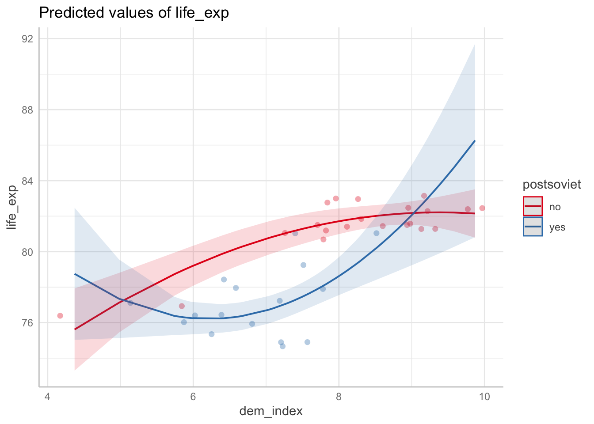
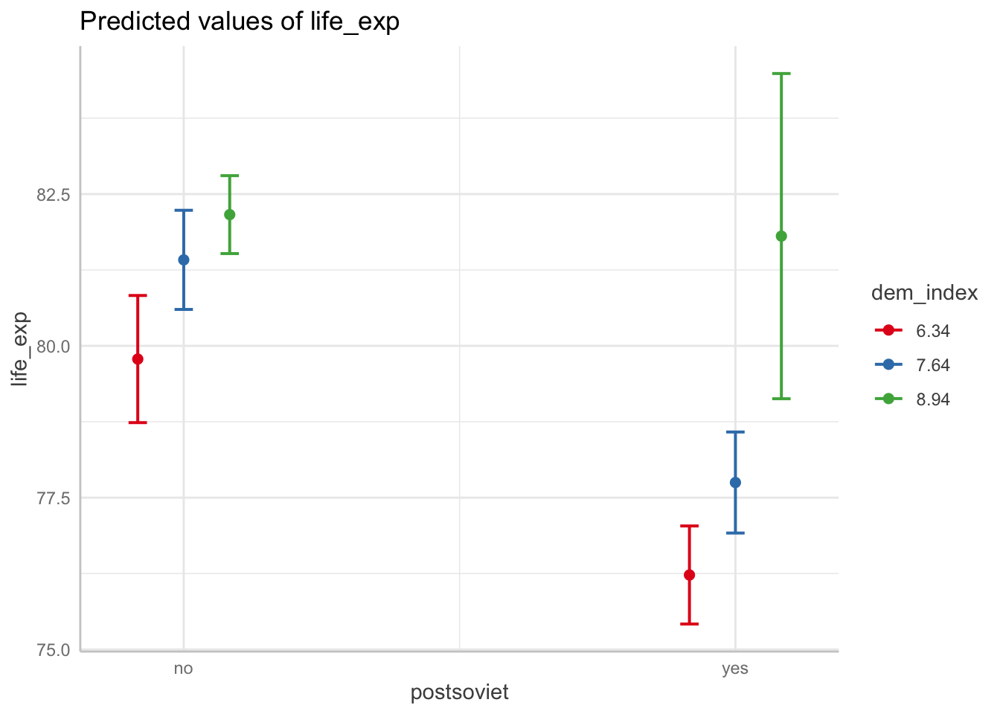
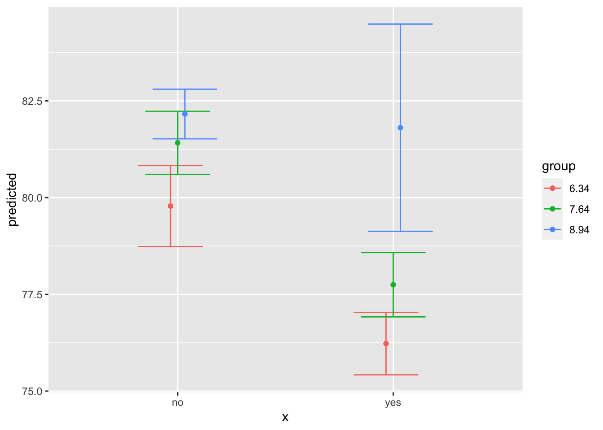

We will introduce two ways of presenting regression models visually. First, we will introduce so called point-range plots, which are a very straightforward way to graphically display information from regression coefficients tables. Second, we will focus on so called margianl effects and their visualization - a technique which requires some some new conptual insights and is especially useful for dealing with complex models and/or models with interactions.
We live in a visual time and we think this is a good thing. Using point-range plots to present multiple-regression models is especially useful for a large number of predictors. For example, consider the following model with five predictors (which is not that many). Unless you fall for the practice which we very much try to discourage, i.e. only looking where the stars are, but you want to appreciate the different estimates and their standard errors more carefully, going through the table can take some time and effort.
m1 <- lm(life_exp ~ dem_index + hdi + uni_prc + poverty_risk + material_dep, data = countries)
summary(m1)##
## Call:
## lm(formula = life_exp ~ dem_index + hdi + uni_prc + poverty_risk +
## material_dep, data = countries)
##
## Residuals:
## Min 1Q Median 3Q Max
## -3.5719 -1.0443 0.0061 0.9947 2.9658
##
## Coefficients:
## Estimate Std. Error t value Pr(>|t|)
## (Intercept) 38.9120 15.1215 2.573 0.0159 *
## dem_index 0.1798 0.6563 0.274 0.7862
## hdi 45.0304 19.0661 2.362 0.0257 *
## uni_prc -6.2845 6.3474 -0.990 0.3309
## poverty_risk 14.9126 10.2387 1.456 0.1568
## material_dep -10.4917 7.7393 -1.356 0.1864
## ---
## Signif. codes: 0 '***' 0.001 '**' 0.01 '*' 0.05 '.' 0.1 ' ' 1
##
## Residual standard error: 1.787 on 27 degrees of freedom
## (5 observations deleted due to missingness)
## Multiple R-squared: 0.6621, Adjusted R-squared: 0.5995
## F-statistic: 10.58 on 5 and 27 DF, p-value: 1.052e-05Point-range plots visualize regression estimates as points along with confidence intervals making it easy to quickly absorb the results.The most straightforward tidyverse approach is using the function tidy from the broom package to convert the regression results into a data frame (tibble, more specifically). We then apply ggplot with a special geom called geom_pointrange. The resulting plot below shows the regression coefficient for each predictor with its 95% confidence interval.
m1_tibble <- tidy(m1) # convert m1 coefficients table into tibble
m1_tibble %>%
ggplot(aes(x = estimate,
xmin = estimate - 1.96*std.error,
xmax = estimate + 1.96*std.error,
y = term)) +
geom_pointrange() +
geom_vline(xintercept = 0, color = "grey", alpha = 0.8)The plot above is nothing but a staightforward visual representation of the regression table. Since the raw coefficients cannot be compared to each other as each predictor is measured in different units, the same holds for the plotted values: We should consider them separately rather than in a comparative perspective. This is perhaps harder to do with a plot than a table. That’s why we usually prefer plotting standardized betas, which can be roughly compared to each other. In that case, it can be a good idea to arrange estimates by their size (it would be a rather misleading thing to do in the previous graph where comparison do not make sense).
countries_scaled <-
mutate(.data = countries,
across(.cols = c("life_exp", "dem_index", "hdi",
"uni_prc", "poverty_risk", "material_dep"),
.fns = scale,
.names = "{.col}_scaled")) %>%
# we only keep variables to be used in the model
select(contains("_scaled"))
# thanks to only keeping variables to be used in the model, we can use this shorthand
m2 <- lm(life_exp_scaled ~ ., data = countries_scaled)
tidy(m2) %>%
mutate(term = fct_reorder(term, estimate)) %>%
ggplot(aes(x = estimate,
xmin = estimate - 1.96*std.error,
xmax = estimate + 1.96*std.error,
y = term)) +
geom_pointrange() +
geom_vline(xintercept = 0, color = "grey", alpha = 0.8)There are also multiple packages which you can use for some quickly available additional effects. In our work, we have used the jtools package, which produces elegant plots, but there are others out there.
plot_summs(m1)You can scale from within the plot_summs function:
plot_summs(m1, scale = TRUE)The package also makes it easy to combine multiple confidence intervals into one plot. 95% is the default, but you can add an inner interval.
plot_summs(m1, scale = TRUE, inner_ci_level = .8) # compate two modelsFinally, it is really easy to compare multiple models visually. Here, adding eu_membership, in itself a statistically insignificant predictor, does almost nothing to the other predictors.
m2 <- update(m1, . ~ . + eu_member) # add another predictor
plot_summs(m1, m2, scale = TRUE, inner_ci_level = .8)Once the regression models become more complex, e.g., they include interactions, quadratic terms, or combination of them, the challenge is not having to go through a lot of values, but even making sense of the values in the first place. For example, consider a model involving a quadratic term and an interaction such as below.
m3 = lm(life_exp ~ poly(dem_index, 2) * postsoviet,data = countries[!is.na(countries$dem_index),])
summary(m3)##
## Call:
## lm(formula = life_exp ~ poly(dem_index, 2) * postsoviet, data = countries[!is.na(countries$dem_index),
## ])
##
## Residuals:
## Min 1Q Median 3Q Max
## -2.4637 -0.6699 0.0001 0.5908 3.4363
##
## Coefficients:
## Estimate Std. Error t value Pr(>|t|)
## (Intercept) 80.9815 0.3179 254.772 < 2e-16 ***
## poly(dem_index, 2)1 8.3279 1.7488 4.762 4.24e-05 ***
## poly(dem_index, 2)2 -3.2965 1.5393 -2.142 0.04019 *
## postsovietyes -1.9959 0.6989 -2.856 0.00759 **
## poly(dem_index, 2)1:postsovietyes 5.0854 4.1320 1.231 0.22768
## poly(dem_index, 2)2:postsovietyes 12.6991 4.0994 3.098 0.00412 **
## ---
## Signif. codes: 0 '***' 0.001 '**' 0.01 '*' 0.05 '.' 0.1 ' ' 1
##
## Residual standard error: 1.288 on 31 degrees of freedom
## Multiple R-squared: 0.8209, Adjusted R-squared: 0.792
## F-statistic: 28.42 on 5 and 31 DF, p-value: 1.034e-10The model becomes almost impossible to interpret from the table. Sure, we can still proceed with the technical, algorithmic interpretation: if we compare hypothetical two groups of countries which are both post-soviet, have the base democratic index 0, but the first group has the quadratic democratic index higher by 1 than the second, then we would expect in this group the life expectancy to be 12.7 - 3.3 = 9.4 years higher, on average, than in the second group. While technically hopefully correct, this information is also completely undecipherable. (We will leave aside what it actually means that the base democratic index is 0 and the quadratic term is higher by 1 in one group than another. While it is theoretically impossible for such a country to even exist (once democratic index is 0, its quadratic term can be nothing but a 0, too),the linear (i.e. additive) model can make such a prediction.)
Fortunately, we have another way to interpret our model: displaying visually the marginal effects
Marginal effects (also adjusted predictions) are expected values of the dependent variable for given values of selected independent variable while other independent variables are held constant (preferably at some reasonable value such as mean, this is important for models with interactions where keeping other variables constant at 0 can be rather unhelpful).
In R, there are several packages for computing marginal effects (as there are for nearly everything). The package ggeffects is especially well suited for the tidyverse environment, so it will be our go-to package for visualizing marginal effects in this course.
Before plotting them, we need to calculate marginal effects. We do this using the ggpredict function from the ggeffects package. For the model above, we could do:
ggpredict(m3, terms = c("dem_index"))## # Predicted values of life_exp
##
## dem_index | Predicted | 95% CI
## --------------------------------------
## 4.37 | 75.61 | [73.30, 77.93]
## 5.98 | 79.17 | [78.04, 80.30]
## 6.67 | 80.28 | [79.29, 81.27]
## 7.38 | 81.16 | [80.29, 82.04]
## 7.71 | 81.48 | [80.68, 82.28]
## 8.08 | 81.77 | [81.07, 82.47]
## 8.68 | 82.08 | [81.48, 82.68]
## 9.87 | 82.15 | [80.79, 83.51]
##
## Adjusted for:
## * postsoviet = noNote, the output gives us predicted values of life_expectancy for several values (here selected automatically by default) of democracy index for non-postsoviet countries, based on the model specification above. Let us say it again, the predicted values are linked to the model specification. We can quickly demonstrate this by calculating other models and comparing the predictions. This time, we will specify values of democracy index for which we want our predictions to make the output comparable:
m4 <- lm(life_exp ~ dem_index,data = countries)
m5 <- lm(life_exp ~ dem_index + postsoviet ,data = countries)
ggpredict(m3, terms = "dem_index [4:9]")## # Predicted values of life_exp
##
## dem_index | Predicted | 95% CI
## --------------------------------------
## 4 | 74.60 | [71.79, 77.41]
## 5 | 77.17 | [75.51, 78.83]
## 6 | 79.21 | [78.08, 80.33]
## 7 | 80.72 | [79.78, 81.67]
## 8 | 81.71 | [80.99, 82.43]
## 9 | 82.17 | [81.51, 82.84]
##
## Adjusted for:
## * postsoviet = noggpredict(m4, terms = "dem_index [4:9]")## # Predicted values of life_exp
##
## dem_index | Predicted | 95% CI
## --------------------------------------
## 4 | 73.68 | [71.84, 75.52]
## 5 | 75.30 | [73.90, 76.70]
## 6 | 76.92 | [75.93, 77.91]
## 7 | 78.54 | [77.86, 79.23]
## 8 | 80.16 | [79.53, 80.80]
## 9 | 81.78 | [80.89, 82.68]ggpredict(m5, terms = "dem_index [4:9]")## # Predicted values of life_exp
##
## dem_index | Predicted | 95% CI
## --------------------------------------
## 4 | 76.99 | [75.15, 78.84]
## 5 | 78.05 | [76.59, 79.51]
## 6 | 79.11 | [78.01, 80.21]
## 7 | 80.16 | [79.37, 80.95]
## 8 | 81.22 | [80.60, 81.83]
## 9 | 82.27 | [81.58, 82.97]
##
## Adjusted for:
## * postsoviet = noWhile the command is the same, each predictions are different because we refer to models with different specifications.
We can also specify more terms for which to calculate predictions, such as in the following code which produces same values as the respective command above, but also adds predictions for post soviet countries.
ggpredict(m3, terms = c("dem_index [4:9]", "postsoviet"))## # Predicted values of life_exp
##
## # postsoviet = no
##
## dem_index | Predicted | 95% CI
## --------------------------------------
## 4 | 74.60 | [71.79, 77.41]
## 5 | 77.17 | [75.51, 78.83]
## 6 | 79.21 | [78.08, 80.33]
## 7 | 80.72 | [79.78, 81.67]
## 8 | 81.71 | [80.99, 82.43]
## 9 | 82.17 | [81.51, 82.84]
##
## # postsoviet = yes
##
## dem_index | Predicted | 95% CI
## --------------------------------------
## 4 | 79.87 | [75.00, 84.74]
## 5 | 77.31 | [75.14, 79.48]
## 6 | 76.25 | [75.34, 77.15]
## 7 | 76.68 | [75.91, 77.46]
## 8 | 78.62 | [77.55, 79.69]
## 9 | 82.06 | [79.23, 84.88]Now, we can specify as many as four terms in one ggpredict command. The predictions are then made for a few level of each predictors which are algorithmically selected. We showed above how this default can be overwritten in square brackets. There is a third option if we do not want to rely on default values and we also don’t want to hand pick values ourselves - we can use following shorthands: [meansd] for predictions for the values one standard deviation below the mean, the mean, and one standard deviation above the mean; [quart2] for the three quartiles. Examples follow:
ggpredict(m3, terms = c("dem_index [meansd]", "postsoviet"))## # Predicted values of life_exp
##
## # postsoviet = no
##
## dem_index | Predicted | 95% CI
## --------------------------------------
## 6.34 | 79.78 | [78.74, 80.83]
## 7.64 | 81.42 | [80.60, 82.23]
## 8.94 | 82.16 | [81.52, 82.80]
##
## # postsoviet = yes
##
## dem_index | Predicted | 95% CI
## --------------------------------------
## 6.34 | 76.23 | [75.42, 77.03]
## 7.64 | 77.75 | [76.92, 78.58]
## 8.94 | 81.81 | [79.13, 84.49]ggpredict(m3, terms = c("dem_index [quart2]", "postsoviet"))## # Predicted values of life_exp
##
## # postsoviet = no
##
## dem_index | Predicted | 95% CI
## --------------------------------------
## 6.67 | 80.28 | [79.29, 81.27]
## 7.71 | 81.48 | [80.68, 82.28]
## 8.68 | 82.08 | [81.48, 82.68]
##
## # postsoviet = yes
##
## dem_index | Predicted | 95% CI
## --------------------------------------
## 6.67 | 76.37 | [75.59, 77.16]
## 7.71 | 77.90 | [77.04, 78.76]
## 8.68 | 80.79 | [78.69, 82.90]Finally, you can also use the condition parameter to hold covariates constant on a specific level rather than their mean. Compare the following two lines of code. The first gives prediction for both level of post_soviet holding the democracy index constant at its mean. The second hold it constant at its theoretical maximum.
ggpredict(m3, terms = c("postsoviet"))## # Predicted values of life_exp
##
## postsoviet | Predicted | 95% CI
## ---------------------------------------
## no | 81.42 | [80.60, 82.23]
## yes | 77.75 | [76.92, 78.58]
##
## Adjusted for:
## * dem_index = 7.64ggpredict(m3, terms = c("postsoviet"), condition = c(dem_index = 10))## # Predicted values of life_exp
##
## postsoviet | Predicted | 95% CI
## ---------------------------------------
## no | 82.11 | [80.59, 83.63]
## yes | 86.99 | [81.07, 92.92]Now for the fun part. The easiest way to plot the marginal effects is by using a generic function plot on the object created by ggpredict. Again, the plot corresponds to the respective model specification, so do not forget to provide it along with your plot.
ggpredict(m3, terms = c("dem_index", "postsoviet")) %>% plot()Conveniently, applying plot on the ggpredict-generated object creates a ggplot object, so you can edit it with the usual ggplot syntax.
ggpredict(m3, terms = c("dem_index", "postsoviet")) %>%
plot () +
labs(x="Democracy index", y="Life expectancy", title = "Predicted values of life expectancy", subtitle = "formula = life_exp ~ poly(dem_index, 2) * postsoviet") +
scale_x_continuous(breaks = c(5:10))The look of the resulting plot will depend on the order of terms as they are entered in the ggpredict function. The mapping follows these rules:
A great feature of the generic plot function when applied to a ggpredict object is its parameter add.data to draw the actual data points and thus visually assess the model fit.
ggpredict(m3, terms = c("dem_index", "postsoviet")) %>% plot(add.data = TRUE)
When you apply ggpredict, it produces this output which looks like an array. However, there is a standard data frame in the background - of course, this is tidyverse, right. To force it shows its true face, you just apply a function such as as_tibble or View and magic happens.
ggpredict(m3, terms = c("dem_index", "postsoviet")) %>% as_tibble()## # A tibble: 72 x 6
## x predicted std.error conf.low conf.high group
## <dbl> <dbl> <dbl> <dbl> <dbl> <fct>
## 1 4.37 75.6 1.18 73.3 77.9 no
## 2 4.37 78.8 1.90 75.0 82.5 yes
## 3 4.98 77.1 0.857 75.4 78.8 no
## 4 4.98 77.3 1.13 75.1 79.6 yes
## 5 5.74 78.7 0.618 77.5 79.9 no
## 6 5.74 76.4 0.551 75.3 77.5 yes
## 7 5.87 79.0 0.594 77.8 80.1 no
## 8 5.87 76.3 0.499 75.3 77.3 yes
## 9 5.98 79.2 0.577 78.0 80.3 no
## 10 5.98 76.3 0.466 75.3 77.2 yes
## # ... with 62 more rowsKnowing now the true appearance of the object, you can also work produce a ggplot from the scratch. First, apply plot:
df <- ggpredict(m3, terms = c("postsoviet", "dem_index")) # notice we now reverse the terms to change appearance
df %>% as_tibble()## # A tibble: 6 x 6
## x predicted std.error conf.low conf.high group
## <fct> <dbl> <dbl> <dbl> <dbl> <fct>
## 1 no 79.8 0.534 78.7 80.8 6.34
## 2 no 81.4 0.417 80.6 82.2 7.64
## 3 no 82.2 0.327 81.5 82.8 8.94
## 4 yes 76.2 0.412 75.4 77.0 6.34
## 5 yes 77.7 0.424 76.9 78.6 7.64
## 6 yes 81.8 1.37 79.1 84.5 8.94df %>% plot()
Now we produce something similar from scratch:
ggplot(df, aes(x = x, y = predicted, colour = group)) +
geom_point(position = position_dodge(.1)) +
geom_errorbar(
aes(ymin = conf.low, ymax = conf.high),
position = position_dodge(.1)
) +
scale_x_discrete(labels = get_x_labels(df))
The ggeffects package offers three options for computing marginal effects. We have only use ggpredict(). This functions is based on the predict() function from the base R. The second options is ggeffect(), which requires the effects package. The main difference between between the two is in their treatment of categorical predictors. ggpredict() fixes categorical at the reference category when computing marginal effects, while ggeffect() computes a “sort of average of the categorical predictors” (as it is stated in the manual). The last option, ggemmeans(), treats categorical predictors in a similar way as ggeffect(), see documentation for detail. It also require the emmeans package.